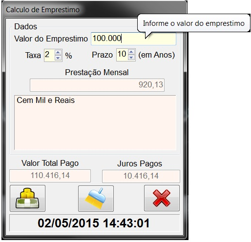
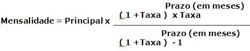
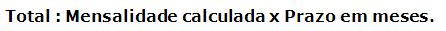

Ajuda para o Aplicativo Calculo de Emprestimo com Juros

Na caixa Principal digite o valor a ser financiado.
Na caixa Taxa digite o valor da taxa de juros ao mês.
Na caixa Prazo digite o valor prazo em anos do financiamento.
Formula:

Formula:

Formula: